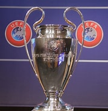
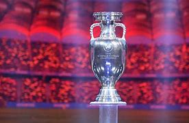
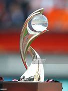

Champions League In Continentals.
Football Leagues has been dominating the league of football in the whole world and Continentals.
but i wouldn't end this if i were you because there couldn't be more excitement of football without
continental club championships:
- CAF Champions League:.The CAF Champions League is the top and greatest competition in club soccer in Africa Football.
CAF Stands for: Confederations Of African Football. Created in 1967, rebranded in 1997, it has been a dominat force in
african club soccer.
.jpeg)
- UEFA Champions League: Everybody never forgets the best competition in european club soccer history representing
the best of football in european club football. It was created in 1960 or 1967 while it was named the european
Champions clubs cup. rebranded in 1992/93 season, UCL sevred as a conterweight to federational football.
UEFA Stands for: Union Of European Football Association.

- AFC Champions League: AFC Championship is a premium asian/oceanic champions league in asian and oceanic club
football history. It have a sensitive championships system. AFC Stands for: Asian Football Confederations.
.jpeg)
- UEFA European Championship men/female: UEFA has been reforming the path to glory both club and
international/continental. That's why UEFA Organised a european championship called the UEFA Euro.

